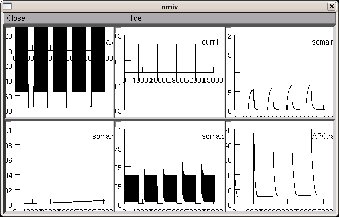

Simulation of hyperpolarization-activated graded persistent activity in prefrontal cortex Reference: Winograd M, Destexhe A, Sanchez-Vives, MV. Hyperpolarization-activated graded persistent activity in the prefrontal cortex. Proc. Natl. Acad. Sci. USA 105: 7298-7303, 2008. Intrinsic currents: INa, IKd for action potentials, IM for spike-frequency adaptation, ICaL for calcium currents, calcium dynamics and the hyperpolarization-activated current Ih. There is also a calcium regulation of Ih, which was taken from thalamic neurons (Destexhe et al., J Neurophysiol., 1996) demo_HPGA_non-saturating.hoc: "non-saturating" model (Fig 4 of the paper) demo_HPGA_non-saturating_noIh.hoc: "non-saturating" model, no Ih (Fig 4 of the paper) demo_HPGA_saturating.hoc: "saturating" model (supplementary Fig S7 of the paper) Usage: Autolaunch from ModelDB and select to run an above file from the radio buttons and press Init & Run to generate graphs for example like (the first Fig 4 non-saturating):  or download and extract the archive, then under linux/unix: ----------- cd to the extracted folder and compile the mod files with nrnivmodl. Then type "nrngui mosinit.hoc" to start the simulations. mswin: ------ Compile the mod files with mknrndll (cd to the extracted folder and make the dll). Double click on mosinit.hoc file to start the simulations. MAC OS X: --------- Drag and drop the extracted folder onto the mknrndll icon. Drag and drop the mosinit.hoc file on the nrngui icon to start the simulations. The model files were supplied by Alain Destexhe. 20110406 updated to use methods cnexp and derivimplicit over euler